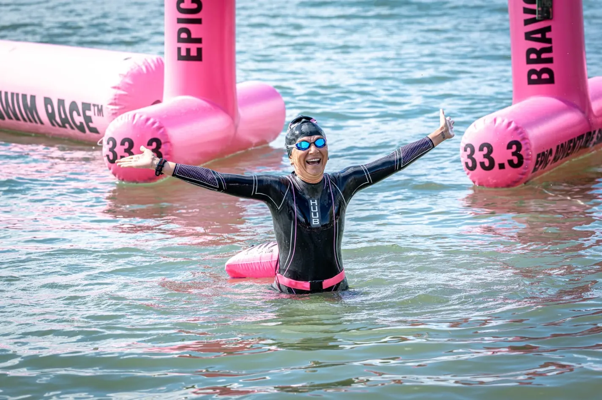
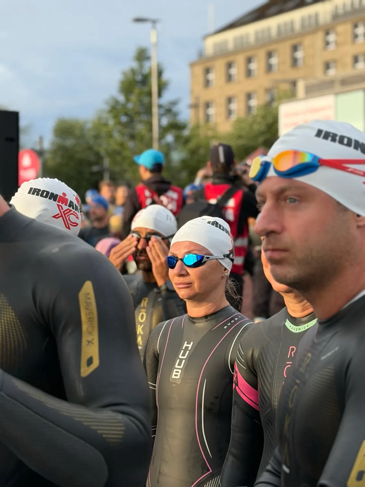
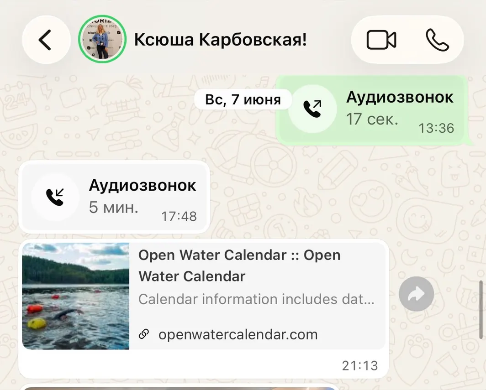
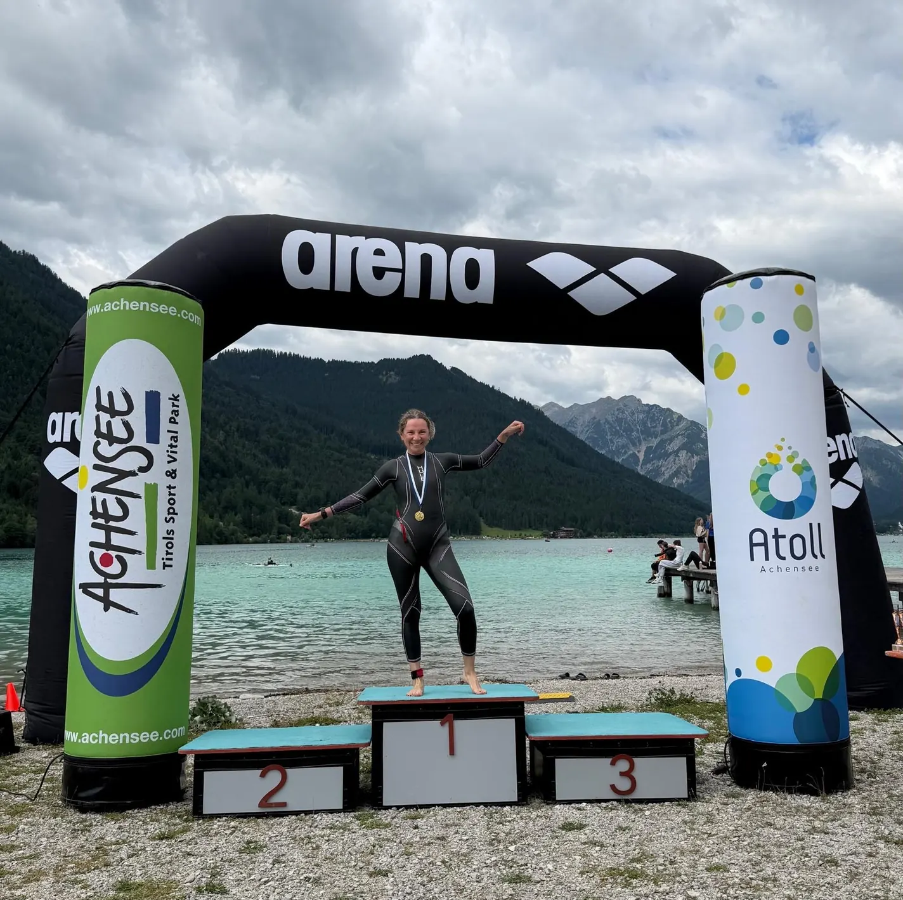
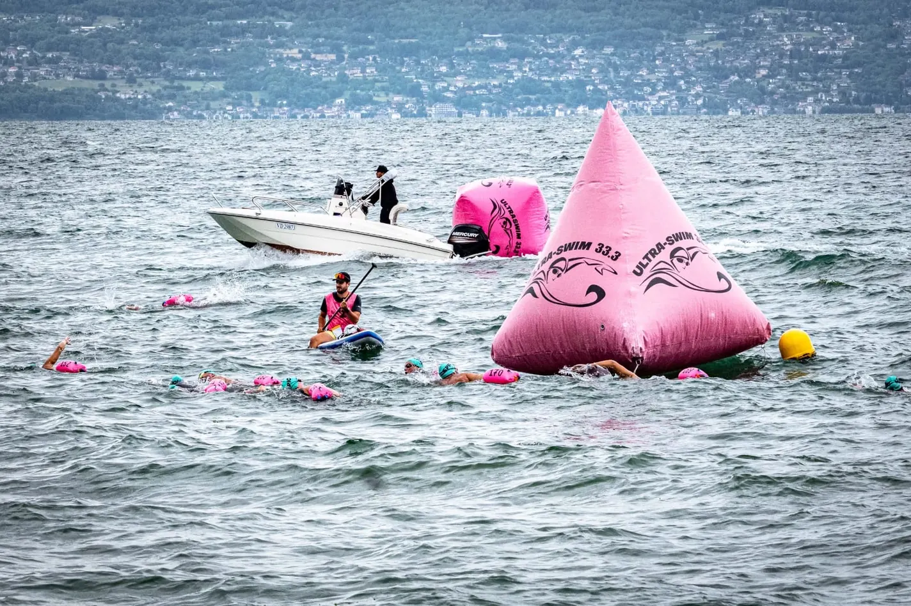
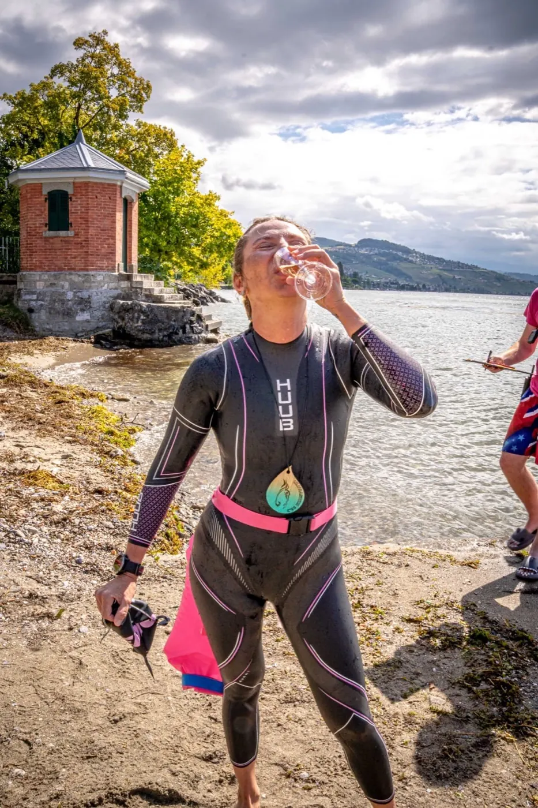
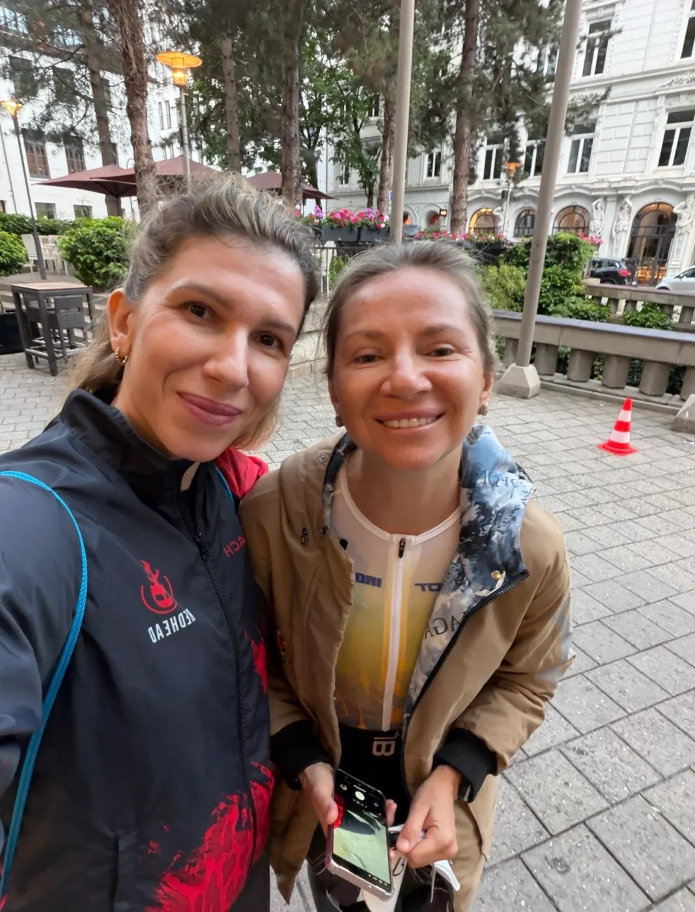

Найважче рішення для спортсмена - зійти з гонки…
7 червня моя спортсменка Ксюша його прийняла. А за сім тижнів пропливла 20 кілометрів через Женевське озеро. Розповім, що було між цими датами.

Гамбург

7 червня, IRONMAN Hamburg. На плавальному етапі у Ксюші стався дихальний спазм. Холодна вода, вдих не заходить, навколо сотні людей - а ти у воді сам. Продовжувати було небезпечно, і вона прийняла рішення зійти. Правильне рішення: гонок багато, життя одне.
За годину ми вже сиділи в готелі й робили розбір польотів. Не у форматі «чому це сталося», а у форматі «що робимо далі». І тут треба розуміти одну річ про страх.
Страх не лікується розмовами, книжками й мотиваційними роликами. Мозок вірить тільки досвіду. Якщо після такого піти з відкритої води на пів року - мозок зафіксує одне: тут НЕБЕЗПЕЧНО. І наступного разу спазм прийде раніше. Ще на березі.
Мозок вірить тільки досвіду.
Отже, робимо навпаки. Йдемо в страх. Поки сезон у розпалі - стартуємо максимально багато. Не заради медалей і фоточок. Заради нового досвіду для мозку: «я впорався, я живий».
О дев'ятій вечора того ж дня
І знаєте, що мене вразило найбільше? О дев'ятій вечора того ж дня Ксюша надсилає мені посилання на календар запливів. Без «дай мені час прийти до тями». Просто: «Давай обирати старти».
У цей момент усе вже було вирішено.

Далі по фактам. 5 липня - Австрія, крижане гірське озеро, 5 кілометрів відкритої води. Через місяць після Гамбурга. Але це була тільки розминка.

24 липня - багатоденка UltraSwim 33.3 через Женевське озеро. Чотири дні поспіль, понад 20 кілометрів сумарно. На другий день - перетин озера з Франції до Швейцарії, найдовший заплив у її житті.
Але головне сталося на четвертий день.
Четвертий день

У тілі - втома трьох днів запливів. Погода зіпсувалася так, що Гамбург нервово курить осторонь. І на першому ж колі паніка повернулася. Той самий спазм. Той самий страх.
Тільки тепер Ксюша знала, що робити. Видихнула. Лягла стрілкою на воду. Максимально розслабилася - і догребла до фінішу.
Страх не зник. Змінилося те, що вона робить, коли він приходить. Саме за цією навичкою ми йшли від самого Гамбурга. Її не купиш у жодного тренера й у жодному навчальному відео. Тільки здобути. Самому. У воді.
Страх не зник. Змінилося те, що вона робить, коли він приходить.
І ось що найсмішніше: плавання Ксюша, взагалі-то, терпіти не може. На першому брифінгу вона так і сказала організаторам: «Плавання - не моє. Я тут, щоб зробити слабку сторону сильною». Чотири дні та 20 кілометрів по тому її спитали на фініші: «Ну що, тепер любиш плавання?» - «Нереально люблю».
Скільки в цій відповіді любові, а скільки ендорфінів фінішу - не знаю. Але одне знаю точно.

Сказала - зробила
Цей текст - про шалену жінку, якою я пишаюся і з якої багато в чому беру приклад. Головна її навичка: сказала - зробила.
Мета Ксюші - кваліфікація на чемпіонат світу IRONMAN у Коні. Вийде чи ні - сьогодні не знає ніхто. Але є люди, які після важкого досвіду все життя обходять його стороною. А є ті, хто ввечері того ж дня відкриває календар стартів. І такі зазвичай доходять.

P.S. Розповідь самої Ксюші по днях - у її Instagram: @karbovskaya.ks
Ксюша - одна з моїх спортсменок. Якщо хочеш готуватися до своїх стартів так само - з планом, розбором кожного тренування і тренеркою, яка поруч у такі моменти:
Тренуватися зі мною Формати роботи